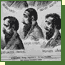
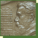
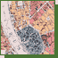
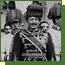
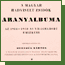

| 1878 | Josua Stampfer, one of the Hungarian founders of Petah Tikva (Israel) | |
| 1883 |  | Drawing in the contemporary press at the time of the Tiszaeszlár case |
| 1896 |  | Zionism |
| 1896 |  | Map of Budapest |
| 1903 | The Congress of the Mizrachi in Pozsony (Pressburg, Bratislava) | |
| 1905– 1908 |
The Institute for the Blind, Budapest |
|
| 1909– 1912 |
The Municipal Commercial School in Vas Street (Béla Lajta), Budapest |
|
| 1909– 1918 |
The building of the Gellért Hotel and Spa, Budapest |
|
| 1913 |  | The General Staff with Samu Hazai (1851–1942) |
| 1914– 1918 |
 | The Golden Album of the Hungarian Jewish War Veterans |
| 1919 | The revolutionary governing council of the Hungarian Soviet Republic | |